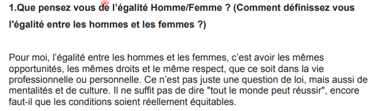

Découvrez les témoignages et avis sur l'égalité entre hommes et femmes dans le domaine du numérique.
« Les enfants de ma génération ont été éduqués selon un stéréotype selon lequel les garçons sont faits pour l’informatique et les filles, pour la psycho ou le social. Ces stéréotypes engendrent parfois des comportements de parents qui restreignent l’accès au numérique de leurs enfants consolidant du même coup cette vision réductrice des filières. Pourtant, il n’y a pas de raison que chacun ne puisse explorer librement ses centres d’intérêts. »
Ici vous pourrez retrouver l'entièreté des avis récoltés sur le questionnaire Google Form mais aussi ceux des interviews réalisés. Nous avons premièrement optés pour un questionnaire car c'est plutôt simple de prise en main, les personnes peuvent répondre aux questions qu'elles souhaitent dépendant de leur état d'esprit sur une ou plusieurs questions. Les interviews sont aussi une options que nous avons choisi car recevoir des réponses venant directement de la bouche d'une personne reste ce qu'il y a de plus authentique.
Question 1 : Comment la relation entre hommes et femmes se manifeste-t-elle et évolue-t-elle dans le domaine du numérique, notamment en termes d'égalité professionnelle ?
Océane
Maelys
Alexandre
Tatiana

Question 2 : Un avis sur le sexisme/discrimination de la femme dans le milieu de la tech/jeux vidéo ?
Océane
Maelys
Alexandre
Tatiana
Question 3 : Que pensez-vous de la place féminine dans l'eSport ?
Océane
Maelys
Alexandre
Tatiana
Ces interviews montrent clairement à quel point les stéréotypes de genre et les inégalités persistent à travers les générations. En ancrant l'idée que certains métiers sont naturellement faits pour les hommes et d'autres pour les femmes, ces préjugés freinent la diversité dans des secteurs où la mixité est pourtant essentielle. Ainsi, au lieu d'encourager chacun à suivre ses aspirations, ces représentations figées limitent les opportunités et perpétuent un déséquilibre dans des domaines comme l'informatique ou la psychologie.
Pour voir toutes les questions et réponses, cliquez ici.